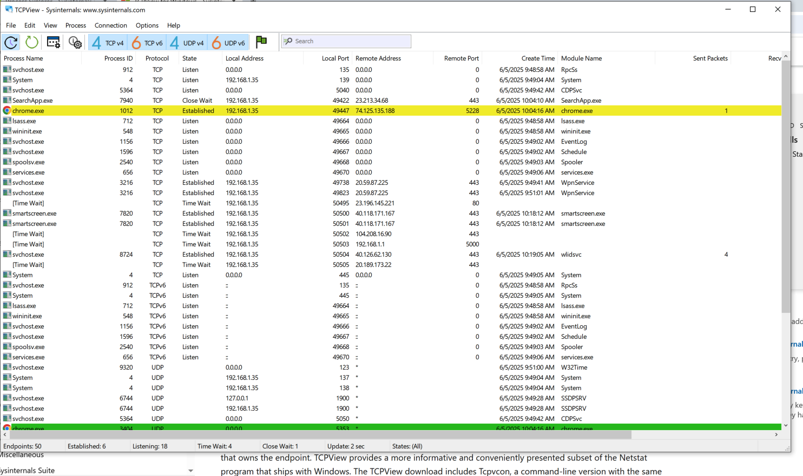
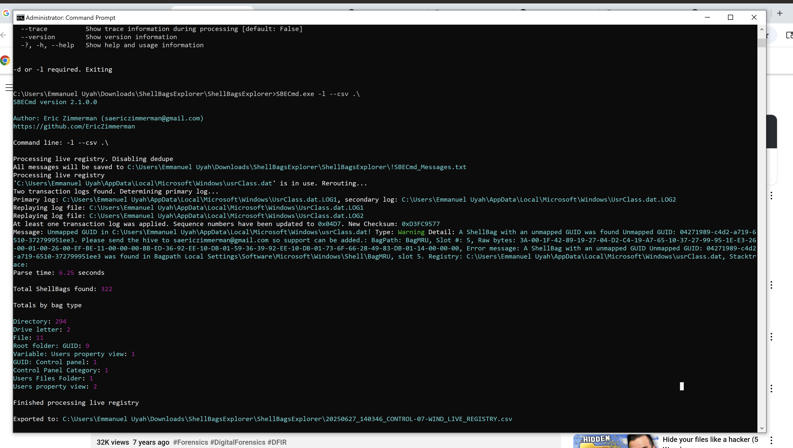
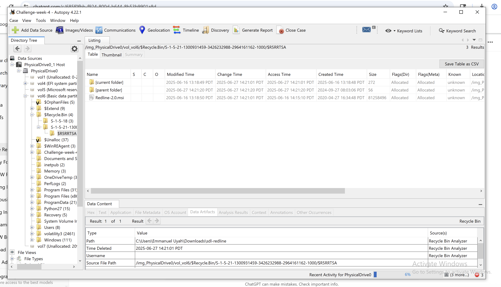
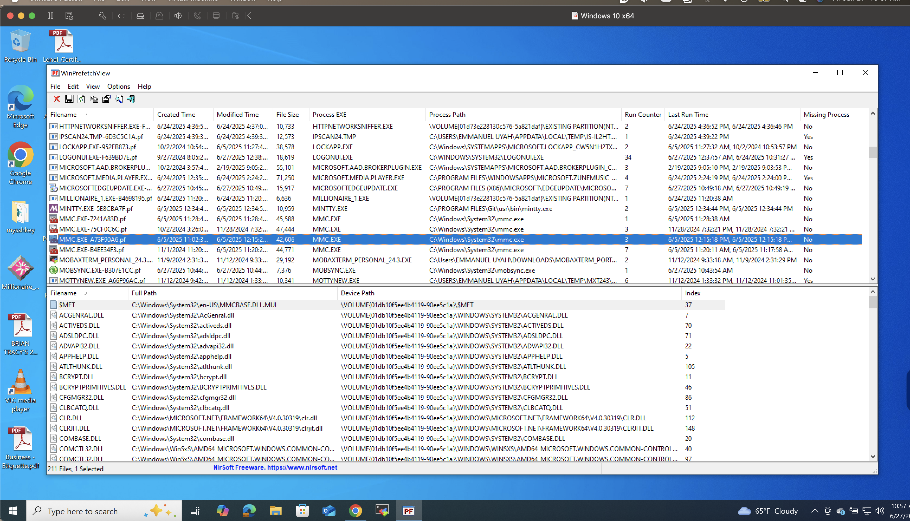

Incidence Response Project
Objective of the Project
Perform an incident response investigation focusing solely on the Windows operating system environment. The goal is to:
- Identifying indicators of compromise (IOCs) such as unusual processes, unauthorized services, or suspicious registry entries.
- Performing memory forensics and log analysis using native Windows tools and open-source tools like Sysinternals Suite, PowerShell, Event Viewer, and Volatility.
- Analyzing system artifacts (e.g., prefetch files, shellbags, recently opened files, etc.) to determine if malicious activity has occurred.
- Documenting your findings and recommending mitigation strategies to prevent future incidents. 
- Sysinternals Suite (Process Explorer, Autoruns, TCPView)
- PowerShell (Get-Process, Get-Service, Get-EventLog)
- Windows Event Viewer
- Windows Event Viewer:
- Security Logs (for login attempts, account changes)
- System Logs (for system events, driver issues)
- Application Logs (for application errors, warnings)
- Magnet RAM Capture (I used this to create memory dump: memory.raw file)
- Volatility: Using this command:
- Python3 vol.py -f “\Memmory\memory_dmp.raw” windows.cmdline.CmdLine (reveals commands like: ping, curl etc)
- Python3 vol.py -f “\Memory\memory_dmp.raw” windows.dlllist.DllList (DLL loaded by process)
- vol.py -f “\Memmory\memory_dmp.raw” windows.malware.amlfin (detect injected codes)
- vol.py -f “\Memmory\memory_dmp.raw” windows.pstree (show process tree)
- vol.py -f “\Memmory\memory_dmp.raw” windows.pslist (list running processes)
- Regedit
- Autoruns
- Shellbags Explorer
- Autopsy
Tools to Use For:
Live System Analysis:
Log Review:
Memory Forensics(If memory dump is provided):
Artifact Investigation:
Scan Result:
  